Himalayan Trekking Blogs & Travel Information
Explore all 35 migrated articles covering Himalayan altitude guides, seasonal trekking windows, packing checklists, permits, hotels, and Nepal travel advice.
All Migrated Blog Posts
Filter by category or search by topic to open any full-length article.
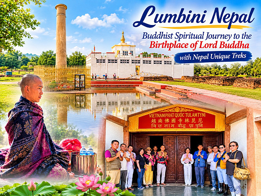
Travel Information 20 MIN READA Buddhist Spiritual Journey from Vietnam to the Birthplace of Lord Buddha
In the flat green plains of southern Nepal, close to the Indian border, stands a quiet garden where, more than 2,500 years ago, Queen Maya Devi gave birth to Prince Siddhartha...
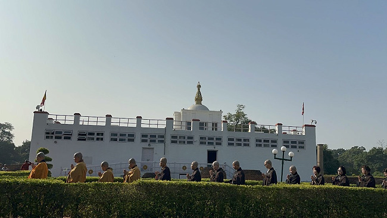
Travel Information 11 MIN READLumbini Nepal Birth Place of Buddha
Lumbini Nepal Birth Place of Buddha
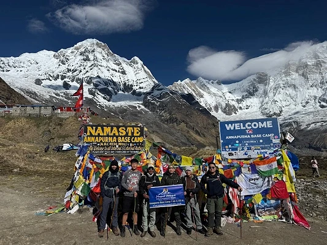
Travel Information 10 MIN READAnnapurna Base Camp Trek Altitude and Acclimatization Guide
Annapurna Base Camp is situated at altitude of 4,130m, which is around 13, 500 feet above sea level, which makes it as a highest sleeping point on this Annapurna Base Camp Trek...
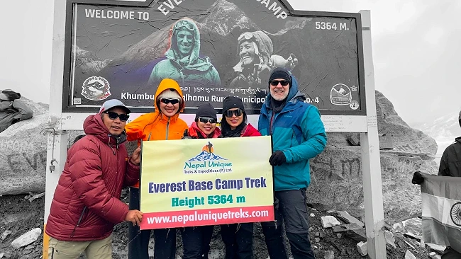
Travel Information 11 MIN READEverest Base Camp Trek Altitude - Complete Elevation Guide
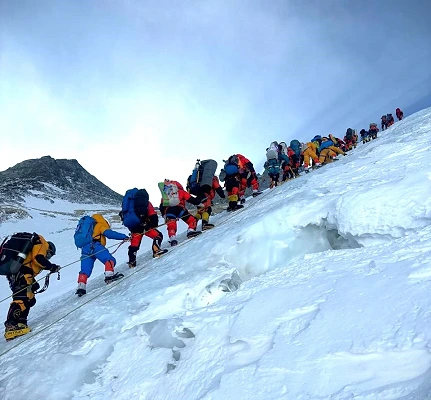
Travel Information 12 MIN READWhere Is Mount Everest Located?
Mt. Everest is in the Himalayas Region, on the border between Nepal and Tibet. It is in Mahalangur Himalayan Range, where big peaks, deep valleys, and high altitude mountain...

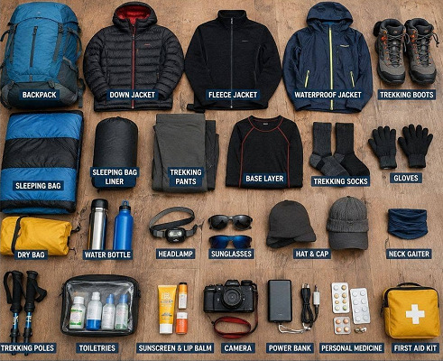
Travel Information 4 MIN READEverest Base Camp Trekking Gear List
The Everest Base Camp Trek is a challenging high-altitude adventure in the Everest region, and Trekking in Nepal. The trek takes you through Namche Bazaar 3440 m, Tengboche3860...
 Travel Information
13 MIN READ
Travel Information
13 MIN READ
Best Time to do Manaslu Circuit Trek
The Manaslu Circuit Trek is one of the most rewarding restricted area Trekking in Nepal, taking you through terraced farmland, dense rhododendron forest, and high alpine desert...

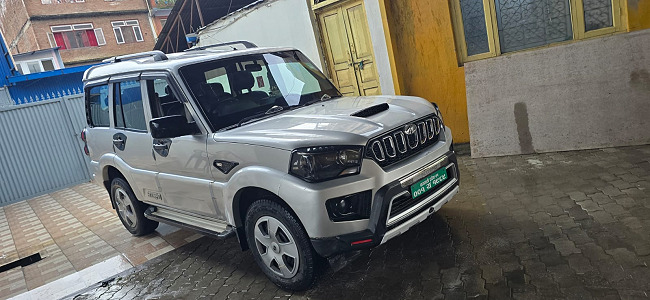
Tourist Vehicle 3 MIN READTourist Vehicle Rental in Nepal
Planning a trip to Nepal? We provide reliable, comfortable, and affordable tourist vehicle rental in Nepal, serving travelers, trekkers, and tour groups across the country....
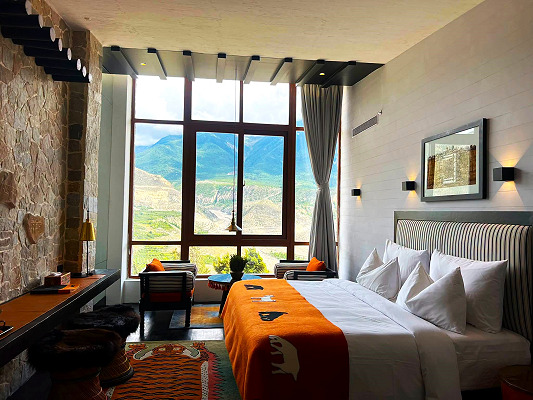
Hotel in Nepal 2 MIN READShinta Mani Mustang Luxury Hotels
Nepal has recived another remarkable milestone in the global tourism industry as Shinta Mani Mustang has been recognized as the World's No. 1 Luxury Hotel in Robb Report's "50...
 Travel Information
10 MIN READ
Travel Information
10 MIN READ
Best Time for Everest Base Camp Trek
Worldwide, adventure seekers and trekking enthusiasts dream of completing this incredible world highest Mt Everest Base Camp journey. For manyadventures lovers, reaching the...
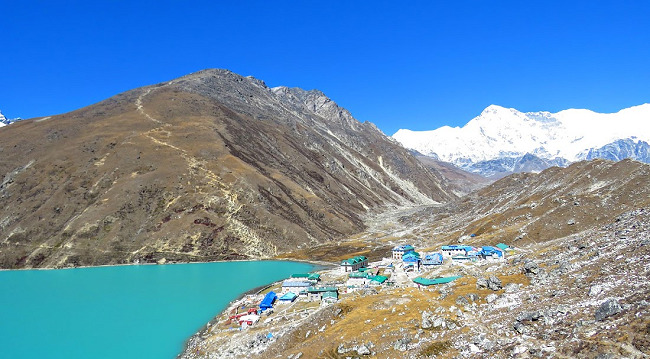
Travel Information 19 MIN READBest Time for Gokyo Valley Trek
Tucked away in the shadow of the world's highest peaks, the Gokyo Valley is one of those rare places that still feels like a secret even though it sits right beside the famous...
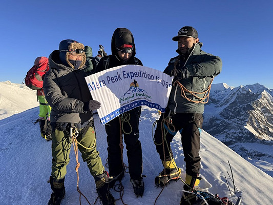
Travel Information 9 MIN READPeak Climbing in Nepal: The Complete Guide to Permits, Costs, Best Seasons & Top Himalayan Peaks
If you've ever stood at Everest Base Camp and looked up at Island Peak's icy pyramid, or stared at photos of Mera Peak's endless summit panorama and thought, "I want to stand...

 Travel Information
18 MIN READ
Travel Information
18 MIN READ
Upper Mustang Tiji Festival Trek 2027: Dates, Cost, and Everything You Need to Know
Every spring, a hidden desert kingdom in the rain shadow of the Himalayas comes alive with the sound of long horns, cymbals, and drums. Masked monks spin through the dusty...
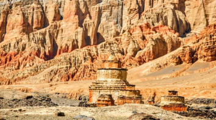
Travel Information 3 MIN READNepal Scraps the $500 Flat Fee for Upper Mustang Trekking Permit
The Government of Nepal has officially announced the removal of the USD 500 flat fee for the Upper Mustang Restricted Area Permit (RAP), replacing it with a more flexible and...
 Travel Information
7 MIN READ
Travel Information
7 MIN READ
Best Winter Treks in Nepal
When most travelers think about trekking in Nepal, they imagine the vibrant trails of autumn and spring. However, few realize that the winter season (December to February) can...
 Travel Information
6 MIN READ
Travel Information
6 MIN READ
Best Treks in Nepal for Beginners
Nepal is a dream destination for adventure lovers, and Trekking in Nepal is the best way to experience its natural beauty and cultural richness. For first-time trekkers, Nepal...
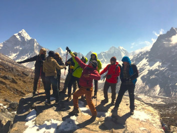
Travel Information 1 MIN READBest Trekking Agency in Nepal
Looking for the best trekking agency in Nepal to make your Himalayan adventure unforgettable? Nepal Unique Treks is a trusted trekking agency in Nepal, offering safe,...
Annapurna Base Camp Trek in November
The Annapurna Base Camp (ABC) Trek is one of Nepal’s most iconic adventures, offering breathtaking Himalayan scenery, cultural richness, and a sense of achievement. While the...
 Travel Information
1 MIN READ
Travel Information
1 MIN READ
Local Trekking Guide Nepal
Hire a trusted local trekking guide in Nepal with Nepal Unique Treks. Explore Everest, Annapurna, or offbeat trails with experienced, licensed guides and full trekking support....
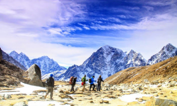
Travel Information 16 MIN READNepal Trekking Trips
At Nepal Unique Treks, we bring over 20 years of expert experience in trekking and climbing in Nepal. As a local agency, we specialize in offering personalized and authentic...
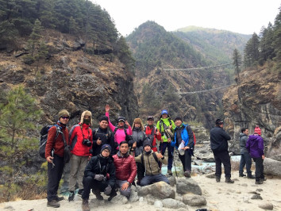
Travel Information 12 MIN READTrekking in Nepal
Trekking in Nepal offers some of the world’s most breathtaking Himalayan adventures, making it a top destination for nature lovers and adventure seekers. Popular routes such as...
 Travel Information
3 MIN READ
Travel Information
3 MIN READ
Drone Permits in Nepal: Rules, Costs, and Application Process
Nepal is a paradise for drone users, offering breathtaking landscapes, Stuning Sunrise and Sunset views from the towering Himalayas to ancient cultural sites. However, flying a...
 Travel Information
7 MIN READ
Travel Information
7 MIN READ
Mardi Himal Trek in Spring Session
The Mardi Himal Trek Spring Session is a short Trekking destination in the Annapurna Region; it lies in western Nepal (Gandaki Province) and is preserved by Annapurna...
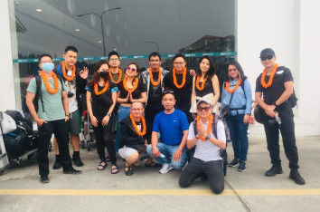
Travel Information 10 MIN READTop 5 Summer Holidays In Nepal
Nepal is a dream destination for travelers seeking a perfect blend of nature, culture, adventure, and relaxation. While many people associate Nepal with towering Himalayan...
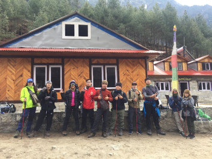
Travel Information 11 MIN READA Complete Guide for Everest Base Camp Trek
Everest Base Camp Trek is the most famous High-altitude and adventure trekking destination in the world, which lies in eastern Nepal, as the world's highest snow peak (8,848.86...
.jpg) Travel Information
1 MIN READ
Travel Information
1 MIN READ
Lets go Nepal
Nepal is a beautiful country nestled in the Himalayas, renowned for its stunning landscapes, rich cultural heritage, and warm hospitality. Here's a glimpse of what we can...
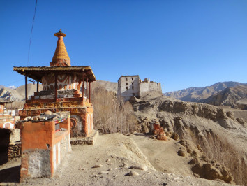
Travel Information 7 MIN READAll about Upper Mustang Trek
All About Upper Mustang Trek is a remote and fascinating region located in the northern part of Nepal, bordering Tibet. It is known as the "hidden kingdom" due to its isolation...
.jpg) Travel Information
7 MIN READ
Travel Information
7 MIN READ
Best Short Trek Around Kathmandu
Not everyone visiting Nepal has three weeks to spend in the high Himalaya, and that's perfectly fine some of the most rewarding trails in the country are sitting right at...
 Travel Information
1 MIN READ
Travel Information
1 MIN READ
Nepali food
Nepali cuisine is diverse and reflects the country's geography and cultural diversity. Here are some traditional Nepali dishes:
.jpg) Travel Information
4 MIN READ
Travel Information
4 MIN READ
Why Annapurna Circuit Trek is Famous
There are many reasons why Annapurna Circuit Trek is famous in Nepal.
 Travel Information
4 MIN READ
Travel Information
4 MIN READ
Peak Climbing in Nepal
Nepal is home to some of the most challenging and rewarding peak climbing destinations in the world. Here are some popular peak climbing options in Nepal:
.jpg) Travel Information
2 MIN READ
Travel Information
2 MIN READ
Best Selling Treks Package in Nepal
Trekking in Nepal is a popular activity for tourists, as the country is home to some of the highest and most stunning mountains in the world. Trekking in Nepal can be a...
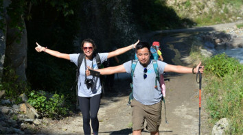
Travel Information 1 MIN READNepal Trekking Permit
There are several trekking places in Nepal where the trekkers need to have Nepal trekking permits. The department of immigration in Nepal will issue such types of trekking...
.jpg) Travel Information
8 MIN READ
Travel Information
8 MIN READ
Nepal Trekking Grades
Nepal is one of the world's most popular destinations for trekking, offering an incredible variety of landscapes, cultures, and mountain adventures. From short and easy walks...
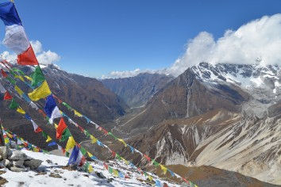
Travel Information 5 MIN READNepal Trekking Session
Nepal Trekking Seasons are one of the influencing determinants of Trekking in Nepal. The different types of seasons will be suitable for different types of trekking at...
Written by Local Mountain Leaders
Our articles are field dispatches reviewed and authored by Nepal Unique Treks founders, IFMGA guides, and safety specialists in Kathmandu.
Dil Gurung
Founder of Nepal Unique Treks who began on the Himalayan trails in 2008 as a porter and has since guided 380+ expeditions across Everest, Annapurna, Manaslu, Langtang, and Upper Mustang.
Pasang Sherpa
TAAN-licensed Khumbu and Everest specialist with 14+ years of field leadership and 210+ treks led across Everest Three Passes, Cho La, Gokyo, and Manaslu.
Lakpa Tenzing
Wilderness First Responder (WFR) certified specialist with 12+ years managing high-altitude AMS protocols, expedition gear checklists, permits, and 24/7 helicopter rescue dispatch.
Maya Gurung
Cultural & private route specialist with 9+ years curating 160+ custom itineraries across Lumbini Buddhist pilgrimages, Upper Mustang festivals, Kathmandu heritage, and family tours.
Pemba Nuru
Internationally accredited UIAGM/IFMGA mountain guide with 16 years of alpine experience and 15+ major Himalayan summits including Mount Everest (8,848m), Manaslu, and Mera Peak.